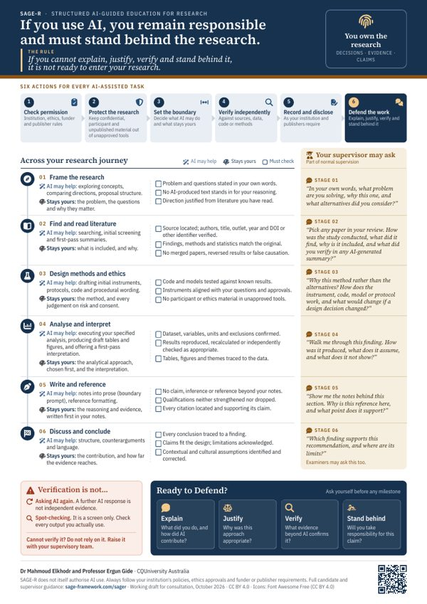

SAGE-R · A4 poster
SAGE-R at a glance
Use, Own and Defend across the research lifecycle, with guidance for candidates by stage and the checks supervisors can model.
The SAGE-R guide, the paper that sets out the framework, and resources to print or reuse. All SAGE-R materials are released under CC BY 4.0.
A practical guide for higher degree research candidates, supervisors and graduate schools on using generative and agentic AI while keeping every research claim the candidate's own. Part A sets out the framework, Part B is written for candidates with five case studies and seven worked examples, and Part C is written for supervisors with prompts and actions across eight candidature milestones.
Cite as: M. Elkhodr and E. Gide, SAGE-R Guide to Generative and Agentic AI in Graduate Research, version 1.0, Zenodo, 2026, doi: 10.5281/zenodo.23873940.
Single-page posters for noticeboards, induction sessions and supervision meetings. Each prints cleanly on A4.

SAGE-R · A4 poster
Use, Own and Defend across the research lifecycle, with guidance for candidates by stage and the checks supervisors can model.
Research security · A4 / A3 poster
Eight questions to ask before sharing unpublished work with an AI tool, from protecting the core contribution to fencing in AI agents.
High-resolution figures for teaching, presentations and induction materials, released under CC BY 4.0 with attribution to Elkhodr and Gide (2026).
The peer-reviewed article that sets out the SAGE-R framework: knowledge support and epistemically consequential judgement, the three stages of Use, Own and Defend, and distributed assurance across candidature.
M. Elkhodr and E. Gide, Frontiers in Education, vol. 11, Art. no. 2030368, 2026, doi: 10.3389/feduc.2026.2030368.
Each page below has a print button that produces a clean, printer-friendly version, which can also be saved as a PDF.
The framework for candidates, the self-check, the work of Own and seven worked examples by research task.
The six actions for every AI-assisted research task, tagged by stage, on a single page.
Modelling the self-check, how Defend works, and supervisor actions across eight milestones.
The SAGE student guide, assessment rubric and unit planner for AI-integrated coursework assessment.